目标检测任务（1）
⛳本报告主要是针对目标检测任务中正负样本不平衡、难易样本不平衡这两个问题进行简要讨论。
论文简介
Lin, T., Goyal, P., Girshick, R.B., He, K., & Dollár, P. (2017). Focal Loss for Dense Object Detection. 2017 IEEE International Conference on Computer Vision (ICCV), 2999-3007.
-
Focal Loss
-
ICCV 2017, Best student paper.
1. 背景
以 2014 年为分界，目标检测的发展历程可以分为两大部分：传统目标检测时期、基于深度学习的目标检测时期。
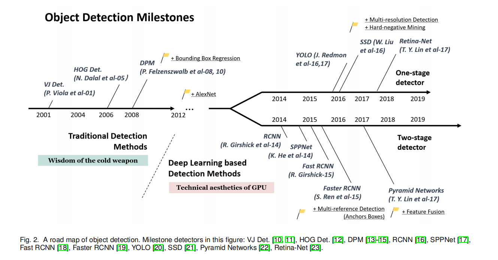
Zou, Z., Shi, Z., Guo, Y., & Ye, J. (2019). Object Detection in 20 Years: A Survey. ArXiv, abs/1905.05055.
在基于深度学习的目标检测算法中，又可以分为单阶段（One/Single-stage）和两阶段（Two-stage）两种大类。当然还有多阶段（Multi-stage），但是其速度和精度都比较低，已经被淘汰了。
1.1 One-Stage and Two-stage
One-stage 和 Two-stage 的主要区别在于受否存在 Region Proposal（可能包含待检物体的预选框）操作。以 Two-stage 方法中的代表 Faster RCNN 为例，算法会先生成候选框（Region proposals，可能包含物体的区域），然后再对每个候选框进行分类和修正位置；而 One-stage 算法会直接在网络中提取特征来预测物体分类和位置。
两种方法都存在各自的优缺点。一般来说，One-stage 方法在速度上存在优势，但是在精度上会差于 Two-stage，主要原因可以总结为：正负样本不平衡（和难易样本不平衡）造成了 One-stage 方法在精度上的劣势。具体分析如下：
-
One-stage 网络最终学习的 Anchor 有很多，但是只有少数 Anchor 对最终网络的学习是有利的，而大部分 Anchor 对最终网络的学习都是不利的，这部分的 Anchor 很大程度上影响了整个网络的学习，拉低了整体的准确率；
-
Two-stage 网络最终学习的 Anchor 虽然不多，但是背景 Anchor 也就是对网络学习不利的 Anchor 也不会特别多，它虽然也能影响整体的准确率，但是肯定没有 One-stage 影响得那么严重，所以它的准确率比 One-stage 肯定要高。
对于正负样本不平衡问题，是比较好解决的，也存在不少的现有方法。Focal Loss 的提出，主要针对难易样本的不平衡问题。有了 Focal Loss，训练过程关注对象的次序为：（正/难） > （负/难） > （正/易） > （负/易）。该损失函数通过抑制那些容易分类样本的权重，将注意力集中在那些难以区分的样本上，有效控制正负样本比例，防止失衡现象。
============================================================
在开始介绍 Focal Loss 之前，我补充一些目标检测的基础知识，我也是才刚开始学习目标检测。
（1）目标检测中的各种“框”
- ground truth：标注框
- Anchor：人为设置的初始先验框
- proposal：RPN 的输出（可能包含物体的候选框），即对 Anchor 第一次做回归得到的结果
- RoI：RPN 阶段输出的 Proposal 经过排序取 topK，然后做 NMS 取一定数量的框，用于第二阶段的再次精修
- bounding box：proposal 经过再次精修后的预测框，由于计算 AP，AP 指的是 bounding box AP。
（2）目标检测任务的评估指标 mAP
https://www.zhihu.com/question/53405779/answer/993913699
AP：PR 曲线下面积，先考虑计算 AP，即一个类别。

- 7 张图像（假设是一个 Batch），15 个 ground truth，24 个预测框
- （1）计算预测框是 TP or FP（计算 bbox 与 Ground truth 的 IoU，根据阈值判断），如果一个 Ground Truth 有多个预测框，则 IoU 最大为 TP，其他为 FP；
- （2）根据置信度从大到小排序所有的预测框；
- （3）计算 Precision = TP / (ACC_TP + ACC_FP)、Recall = TP / (
all grouth truth)；- ACC 表示累加，
all ground truth是一个固定值
- ACC 表示累加，
- （4）绘制 PR 曲线；
- （5）计算曲线下的面积，11 个点 [0, 0.1, 0.2, 0.3, 0.4, 0.5, 0.6, 0.7, 0.8, 0.9, 1] 的插值进行计算（10 个矩形的面积之和）
- （6）所有类别的 AP 计算都分别出来，然后求取平均得到 mAP。
2. Focal Loss
先从二分类的交叉熵开始：
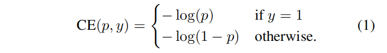
- $y \in {\pm 1}$ 代表 ground truth（真实值）
- $p \in [0, 1]$ 表示模型输出标签为 1 的概率（预测值）
定义一个 $p_t$：
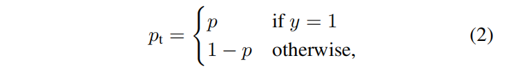
则交叉熵可以写为 $CE(p, y) = CE(p_t) = -log(p_t)$
交叉熵损失存在一个问题，如 Figure 1.，即使那些很容易 easily classified 的样本（$p_t » 0.5$），仍会造成很显著的损失值。当这些 easy example 数量庞大时，其累计起来的损失可能会远远大于（overwhelm）那些 rare class。
我认为这很类似于政治上的民主暴政。
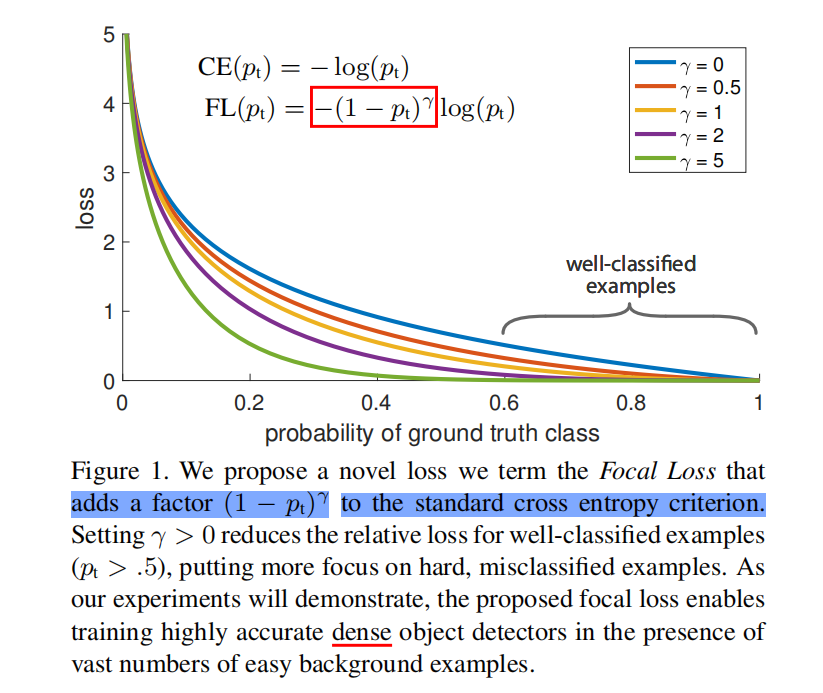
2.1 Balanced Cross Entropy
解决正负样本不平衡的常用方法是对类别 1 引入权重因子 α∈[0,1]，对类别 -1 引入权重因子 1-α。得到 α-balanced CE loss：
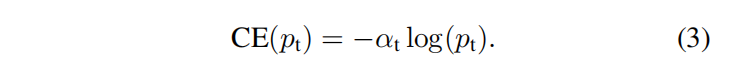
即，
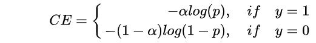
2.2 Focal Loss
Easily classified negatives comprise the majority of the loss and dominate the gradient. α balances the importance of positive/negative examples, it does not differentiate between easy/hard examples.
因此，Focal Loss 的主要目标是 down-weight easy example，使得能够 focus training on hard example。Focal Loss 定义如下：

- $(1 - p_t)^{\gamma}$ 是 modulating factor（调节因子）
- $\gamma$ 是一个可调节的超参数，focusing parameter（聚焦参数）
Focal Loss 有两个性质：
（1）当一个样本出现了错误分类，且 $p_t$ 非常小，则 $(1 - p_t)^{\gamma}$ 非常接近 1，Loss 不受影响；当 $p_t$ 接近于 1 时，$(1 - p_t)^{\gamma}$ 接近 0，对于 well-classified examples 的 Loss 将会降低权重（down-weighted）。因此模型的 Loss 就集中在那些错误分类样本上了（hard example）。
（2）Focusing parameter $\gamma$ 用于调整简单的样本（easy examples, well-classified examples）的 Loss 降低权重（down-weighted）的速率。$\gamma=0$ 时，FL == CE；$\gamma = 2$ 是实验得到的最好值。
Intuitively, the modulating factor reduces the loss contribution from easy examples and extends the range in which an example receives low loss.
例如：
- $\gamma = 2$，一个样本的分类结果为 $p_t = 0.9$（这就是一个 easy example），则 $(1 - 0.9)^{2} = 0.01$。Focal Loss 比 CE 小 100 倍；
- $p_t = 0.968$ 时，FL 比 CE 小近 1000 倍。
- 同理，$p_t = 0.4$ 时（hard example），则 $(1 - 0.4)^{2} = 0.36$。相当于变相给错误分类的难样本的 Loss 增加了权重。“increases the importance of correcting misclassifified examples”
为了平衡正负样本，使用 α 权重，得到最终的 Focal Loss 表达式：
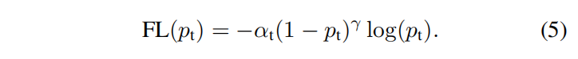
FL 更像是一种思想，其精确的定义形式并不重要。
在 Two-stage 方法中，对于正负样本不平衡问题，主要是通过如下方法缓解：
- （1）object proposal mechanism：reduces the nearly infifinite set of possible object locations down to one or two thousand.
- （2） biased sampling：1:3 ratio of positive to negative examples.
同时，在模型初始化时，可以加入一下先验知识，可以缓解训练初期的不稳定现象。FL 通过直接通过损失函数解决！
Focal Loss 的代码可以参考 MMdetection：https://github.com/open-mmlab/mmdetection/blob/master/mmdet/models/losses/focal_loss.py
3. RetinaNet
为了验证 Focal loss 的有效性，设计了一个叫 RetinaNet 的网络进行评估。实验结果表明，RetinaNet 能够在实现保持 one-stage 速度优势的基础上，在精度上超越所有（2017 年）two-stage 的检测器（ achieves state-of-the-art accuracy and run time on the challenging COCO dataset）。
RetinaNet 的卷积过程用的是 ResNet，上采样和侧边连接还是 FPN 结构。通过主干网络，产生了多尺度的特征金字塔。然后后面连接两个子网，分别进行分类和回归。
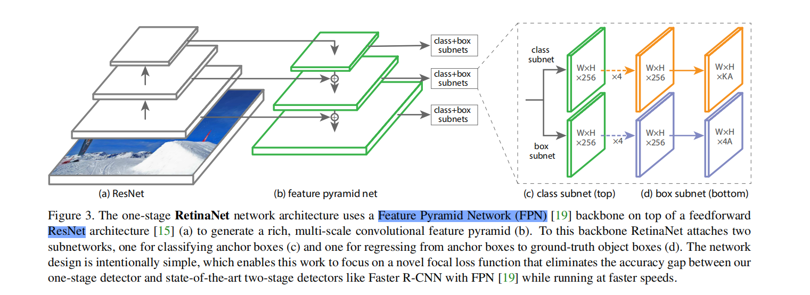
4 实验结果
作者做了很多消融学习，可以总结如下：
- 作者有很多卡；
- $\alpha$ 和 $\gamma$ 这两个超参数是互相影响的；
- Focal loss 的威力还是很大的；
- $\gamma=2, \alpha=0.25$ 时，ResNet-101+FPN 作为 backbone 的结构有最优的性能；
下图是收敛模型中不同 γ 值的正负样本归一化损失的累积分布函数。
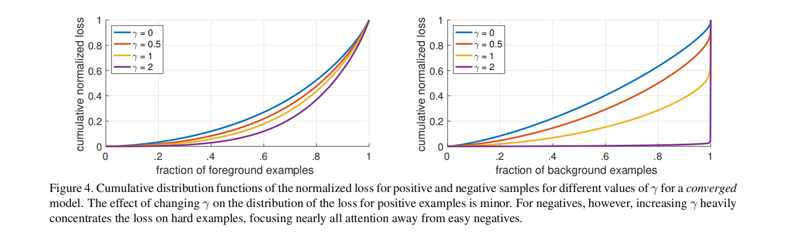
改变 γ 对正样本的损失分布的影响很小。然而，对于负样本，增加 γ 会使得模型几乎所有的注意力从负样本上离开，实现了 down-weight easy example。
Focal Loss 使得 One-stage 方法在精度上超越了 Two-stage 方法。
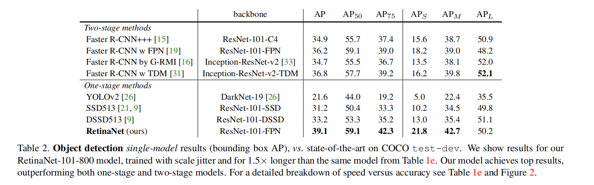
Focal Loss 的缺点：在速度上还存在很大的改进空间。
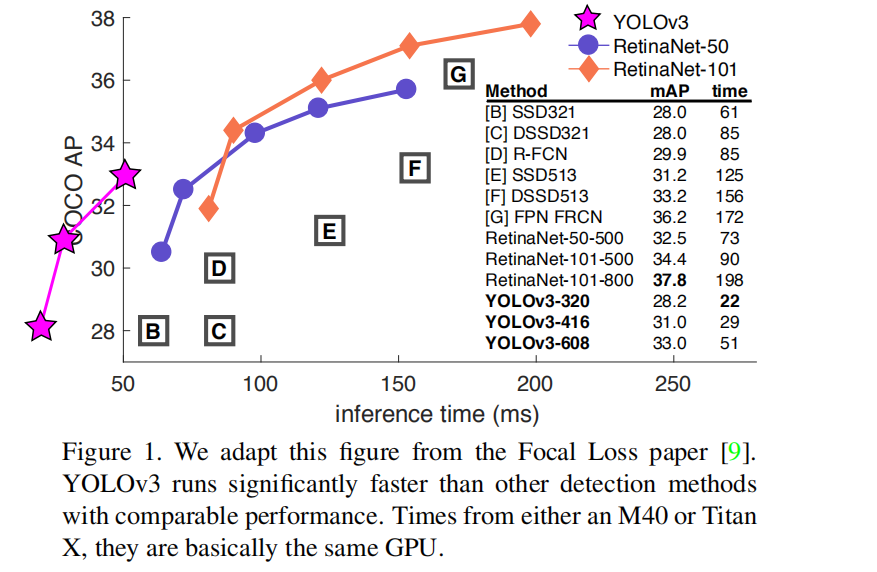
总结
-
One-stage 方法相比于 Two-stage 方法，在精度稍有劣势。研究发现，是正负样本不平衡和难易样本不平衡这两个问题所导致的；
-
Focal Loss 函数通过抑制那些容易分类样本的权重，将注意力集中在那些难以区分的样本上，有效控制正负样本比例，防止失衡现象。
-
Focal Loss 的主要目标是 down-weight easy example，使得模型能够 focus training on hard example。
-
具体做法是，对于难易样本不平衡问题，引入 modulating factor $(1 - p_t)^{\gamma}$， Intuitively, the modulating factor reduces the loss contribution from easy examples and extends the range in which an example receives low loss.
-
为了验证 Focal Loss 的有效性，设计了 RetinaNet 用于实验评估。
-
RetinaNet 能够在实现保持 one-stage 速度优势的基础上，在精度上超越所有（2017 年）two-stage 的检测器（ achieves state-of-the-art accuracy and run time on the challenging COCO dataset）。
-
RetinaNet 也存在缺点，其在速度上仍有很大的改进空间。
扩展学习
Focal Loss 存在缺点：
- 让模型过多关注那些特别难分的样本肯定是存在问题的，样本中有离群点（outliers），可能模型已经收敛了但是这些离群点还是会被判断错误，让模型去关注这样的样本，可能对最后的结果造成不利的影响；
- $\alpha$ 和 $\gamma$ 互相影响，全凭经验得到（不同的数据集都要寻找的最佳的 $\alpha, \gamma$，代价昂贵）；
- 速度上仍存在改进空间。
（1）GHM(gradient harmonizing mechanism) 解决了上述前两个问题。Focal Loss 是从置信度 p 的角度入手衰减 Loss，而 GHM 是一定范围置信度p的样本数量的角度衰减 Loss。
（2）Generalized Focal Loss，不会带来额外的 Cost，提升 1% 的 AP。